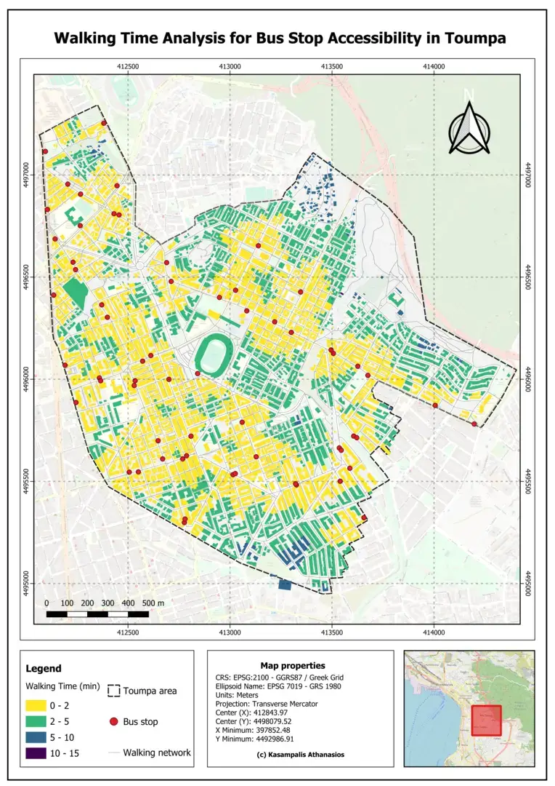

Puplic Transport Accessibility Analysis
Skills / Technologies
Python
QGIS
Jupyter Notebook
Objective:
This project was designed to enhance the accessibility of public transportation in the neighborhoods of Toumpa and
Ano Poli in Thessaloniki. The focus was on using maps and data analysis to understand how easily people can walk to
their nearest bus stops, aiming to help city planners make better decisions and improve public transit options.
Methodology:
-
Data Collection: The data was collected from OpenStreetMap using the OSMnx tool,
which included information about buildings, streets, and bus stop locations.
-
Data Processing: The data was cleaned and organized to ensure it was accurate and usable for analysis.
Scripts in Python were used to sort out necessary information and align all data to a common format for detailed examination.
-
Network Analysis: The project involved calculating the shortest walking routes to bus stops using network analysis methods.
Buildings were connected to the closest points on the walking network, allowing the calculation of the most efficient paths for pedestrians.
-
QGIS Application QGIS was employed to produce static maps that visually represent the data and analysis results, providing clear,
geographic visualizations of walking routes and accessibility.
-
Interactive Mapping Interactive maps were created using the Folium library in Python, enabling dynamic visualization of the data
that users can interact with to explore different aspects of public transportation accessibility.
Results:
- The analysis provided a comparison of how accessible public transportation is in both neighborhoods.
It showed differences in walking distances and times to bus stops, identifying areas where access could be improved.
Conclusions & Future Directions:
The findings demonstrate the usefulness of using map-based network analysis for city planning,
particularly in enhancing public transport systems. Suggestions for future work include expanding
the analysis to more areas, incorporating live traffic updates to adjust walking times, and developing an app
that provides real-time transport accessibility information to residents.
Static Maps:

Interactive Maps: